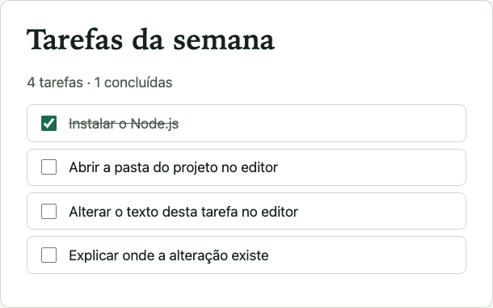
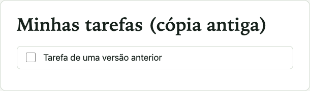

Antes de editar: o que acontece ao recarregar?
O professor abre a página da etapa 01 e altera o título no editor sem salvar. Depois recarrega a aba.
- Escreva a previsão em uma linha.
- Observe a execução ao vivo.
- Compare: o que confirmou, o que contrariou sua explicação?

etapas/01-pagina-estatica/index.html
aberto do disco. Compare depois: título, resumo e quantidade de tarefas.
Alterar o título e uma tarefa — ao vivo, depois você
Compare: título “Minhas tarefas” e 3ª tarefa “Alterar o texto de uma tarefa”.
- <h1>Minhas tarefas</h1>
+ <h1>Tarefas da semana</h1>
…
- <label><input type="checkbox" /> Alterar o texto de uma tarefa</label>
+ <label><input type="checkbox" /> Alterar o texto desta tarefa no editor</label>Duas linhas mudaram. Arquivo completo da diferença: b1-alteracao-index.diff.

Compare: novo título e nova 3ª tarefa, depois de salvar e recarregar. Aceitável: fonte diferente no seu sistema.
- Tempo
- 5 min demonstração + 10 min reprodução
- Pré-requisitos
- Slide 3 concluído; pasta aberta no editor
- Resultado esperado
- Seu título e sua tarefa aparecem após salvar e recarregar
- Troque o texto do
<h1>e de uma tarefa. - Salve: Ctrl+S (Cmd+S no macOS).
- Recarregue a aba: F5 (Cmd+R).
- Marque uma caixa e veja o resumo mudar sem recarregar.
ExpliquePor que o resumo mudou sem recarregar, e o título só depois de recarregar?
“Editei e não mudou”: teste uma hipótese por vez
| Hipótese | Evidência | Teste |
|---|---|---|
| Não salvei | Marca de alteração na aba do editor (ponto/círculo) | Salvar e recarregar |
| Arquivo errado | O caminho na barra de endereço não é o arquivo editado | Comparar o endereço com o caminho no editor |
| Não recarreguei | Texto antigo até recarregar | Recarregar a aba |
A aba mostra 01-pagina-estatica/index.html: nada mudou depois de “editar e recarregar”.

O arquivo editado era versao-antiga/index.html — outra página. Evidência: o caminho na barra de endereço.
Editando o arquivo que a aba carrega, salvando e recarregando, a mudança aparece.
InvestigueQual informação da tela prova qual arquivo a aba carregou?
Mapa mínimo da futura Todo List
| Parte | Ferramenta | Quando |
|---|---|---|
| Interface | HTML, CSS, JS no navegador | Bloco 1 |
| Inspeção | Editor e DevTools | Bloco 2 |
| Execução fora do navegador | Node.js e terminal | Bloco 3 |
| Dependências e scripts | npm, package.json, lockfile | Bloco 4 |
| Projeto Vue e build | create-vue, Vite | Bloco 5 |
| Estado, rotas, API, testes | Pinia, Router, json-server, Vitest | Etapas 06–10 |